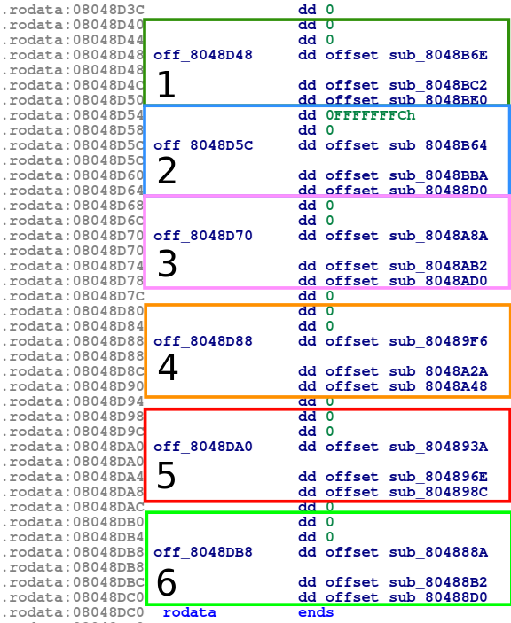
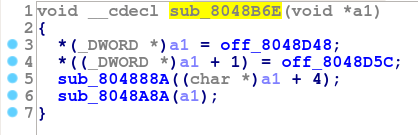
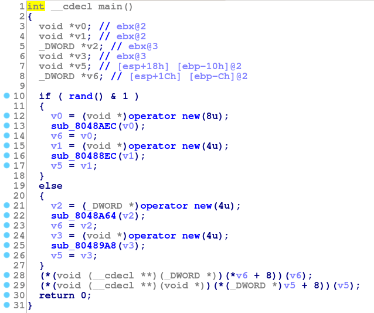
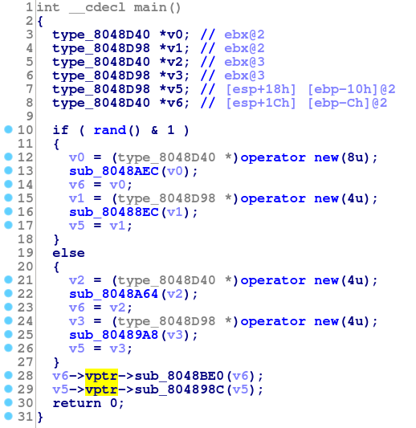

Reversing C++ Virtual Functions: Part 2
In the previous part I described one approach to 'devirtualize' function calls in a small C++ program. Naturally there were several limitations to that approach, namely that it is very manual. If the target binary contains thousands of vtables, it is not practical to manually locate the tables and create these structures and relationships.
So, in this part I will go through a more precise description of the layout of vtables and how we can find them programmatically. I will also show how we can sometimes recover relationships between these vtables (and therefore, between the types they are associated with).
But first I need to describe the set of binaries this is applicable to. In the first part I mentioned that most things related to vtable layout were not specified in the standard, and so tended to vary from compiler to compiler. This is because the C++ standard needs to be applicable regardless of the underlying architecture. It would be unfortunate if the spec required some specific vtable layout that was inefficient on some architecture. The compiler developers for that architecture would be required to choose between performance and compliance (more than they already are).
However, because programs produced by different compilers frequently need to interact (most notable, for dynamic linking), compiler developers agreed to a kind of supplemental specification for things like vtable layout, exception implementation and others. The most common of these is the Itanium C++ ABI. This standard is implemented by GCC, clang, ICC, and many other compilers (but notably, not Visual Studio). The descriptions I give will be applicable these compilers.
The Itanium ABI is also still ambiguous in some areas. For example, it does not state what segments should be used to store vtables. So I will further specify that I'm describing GCC's particular brand of Itanium. So in essence, I am describing the highlighted section:

Additionally, the following assumptions are made:
- RTTI is disabled (if it were on, this would be much easier)
- The program does not contain occurrences of virtual inheritance. Unfortunately, discussing this would dramatically increase the complexity of this topic, and because virtual inheritance is somewhat uncommon I didn't think it was worth it.
- These are 32bit binaries
More about vtable layout
Before we move forward, recall that in part 1, we described a vtable as a contiguous collection of function pointers in a data segment of the binary. We can also say that the array should only be referenced by its first element, because the other elements will be accessed as offsets in to this array.
.rodata:08048D48 off_8048D48 dd offset sub_8048B6E
.rodata:08048D4C dd offset sub_8048BC2
.rodata:08048D50 dd offset sub_8048BE0
This is a section from a binary that seems to fit that definition. It is an array of 3 function pointers in the '.rodata' segment, and only the pointer at 0x08048D48 is referenced. It turns out that this is a vtable, so maybe this heuristic is good enough? If we were to compile the following code:
We would expect there to be 5 vtables, one for Mammal, Cat, Dog, Bird, and Bat. But as you might have guessed, things aren't that simple. In fact there are 6 regions in the binary that meet the above criteria. It becomes clear why this happens when you consider the layout of an object with multiple inheritance.

Notice that Bat includes a complete instance (called subobjects) of Bird and Mammal as well as a vptr for each. These pointers point to different tables. So a type with multiple parents has a vtable in the binary for each one. The Itanium ABI refers to these as a "virtual table group".
Virtual Table Groups
A virtual table group consists of a primary table for the first parent type, and an arbitrary number of secondary tables, one for each parent type after the first. These tables will be adjacent in the binary, in the order the parent types were declared in the source. With this in mind, we would expect the vtable group for Bat to be something like:
| Offset | Description | Bat's vtable for |
|---|---|---|
| 0 | Address of Destructor 1 | Bird |
| 4 | Address of Destructor 2 | Bird |
| 8 | Address of Bat::Fly | Bird |
| 12 | Address of Destructor 1 | Mammal |
| 16 | Address of Destructor 2 | Mammal |
| 20 | Address of Mammal::walk | Mammal |
With each vtable taking 12 bytes. Recall from part 1 that there will be two destructors, and because Bat does not override walk, we would expect the walk from Mammal to appear in Bat's table. However, if we examine the binary we don't see any place with 6 consecutive function pointers in the .rodata segment.
If we look more closely at the Itanium specification, we can see why. A virtual table does not consist of just function pointers. In fact a vtable looks more like this:

The RTTI pointer will typically point to an RTTI struct (that is also described by the Itanium spec). However, because we are assuming RTTI is disabled, it will always be 0. The offset to top has a value equal to the number of bytes that must be added to the this pointer to get the start of the object from some subobject. This is probably a little confusing, so to clarify, image the following code:
These assignments to b and m are both valid. The first does not require any instructions. A Bat is a Bird, and because Bird is its first parent, the Bird subobject is at the very beginning of any Bat object. Thus, a pointer to a Bat is also a pointer to a Bird. This is just like normal, single inheritance.
However, the assignment to m does require work. The Mammal subobject inside a Bat is not at the beginning, so the compiler must insert some instructions to add to bat to make it point to its Mammal subobject. The value added will be the size of Bird (and alignment). The negative of this value will be stored in the Offset to Top field.
This Offset to Top component of the vtable allows us to easily identify vtable groups. A group will consist of those consecutive vtables that have decreasing values in the Offset to Top. Consider the following:

These are the 6 vtables found in the binary built from the above source. Notice that table 2 has a value of -4 (0xFFFFFFFC as a signed int) for its Offset to Top, and all other tables have a value of 0. Also, each RTTI pointer is 0, as we expected. The -4 tells us two things:
- Table 2 is a secondary table in a vtable group (because offset to top is not 0)
- The size of the type associated with table 1 is 4. Keep in mind that because tables 1 and 2 form a table group, the size of the type associated with just table 1 is actually the size of part of the object (i.e a subobject).
Finding Vtables Programmatically
From the above, we can devise the following simple procedures to find vtable (groups) from a binary:
After running the above in the IDA python interpreter, you can execute find_tablegroups() to get a list of vtable group addresses. This could be combined with additional code to construct structures from each vtable, for example.
However, just knowing where tablegroups are is not very useful. We need some information about the relationships between the types associated with the tables. Then, we will be able to generate a list of 'candidate' function calls for a virtual call-site, so long as we know the 'family' the type is associated with.
Recovering Type Relationships
The simplest approach to recovering these relationships is to recognize that two vtables sharing a function pointer are necessarily related. We cannot recover the nature of that relationship, but it is enough to determine that they are in the same family.
But we can go further by considering the behavior of constructors and destructors in C++. An constructor performs the following steps:
- Invoke the parent class's constructors
- Initialize the
vptr(s) to point to this type's vtable(s) - Initialize the members of the object
- Run whatever other code is in the constructor
The destructor performs essentially the opposite steps:
- Set the
vptr(s) to point to this type's vtable(s) - Run whatever other code is in the destructor
- Destroy the members of the object
- Invoke the parent class's destructor
Notice that the vptr is again set to point to the vtable. This seems odd until you consider that virtual function calls should still work during destruction.
Suppose we modified the Bird destructor so it called fly. If you were to destruct a Bat object (which in turn called the Bird destructor when the Bat one was finished), it should call Bird::fly not Bat::fly, because the object is no longer a Bat. For this to work, the Bird destructor must update the vptr.
So, we know that each destructor will call the parent type's destructor, and we know that these destructors will reference the vtable (to assign it to the vptr). We can therefore reconstruct the inheritance hierarchy for a type by "following the destructors". Similar logic can be used for Constructors as well.
Consider the first entry in the first vtable (which we would expect to be a destructor):

Notice that there are two assignments, and these are both address points of vtables. This is step 1 in the list above. These object does not seem to have any members, because it proceeds directly to step 4 and calls the two other destructors. We can confirm that these other functions are destructors because of their location in a vtable (at the start of table 6 and table 3). Doing this for the remaining tables this tells us that the inheritance hierarchy was laid out like:

This matches the actual hierarchy from the source. There are two base classes and one class that has two parents.
Identifying Constructors
By similar reasoning, we can find the constructors associated with a vtable by noting that the constructors will be those functions that assign their vptr to a vtable address that are not destructors. By applying this rule to the target, we discover that there are 5 such functions, one for each type:
| Constructor | Table |
|---|---|
| sub_8048AEC | Table 1/2 |
| sub_8048A64 | Table 3 |
| sub_80489A8 | Table 4 |
| sub_80488EC | Table 5 |
| sub_8048864 | Table 6 |
Devirtualize
With this, we can look at the decompiled body of main:

The virtual functions are clearly visible on lines 28 and 29. However, we can also identify constructors on lines 13, 16, 22, and 25 from the tables above. Using this knowledge, we can follow the process from part 1 to see the devirtualization:

In the above screenshot, I have set v0 to have type type_8048D40*. This is the type associated with table 1/2 and also with the constructor on line 13. Similarly, the constructor on line 16 is associated with table 5, which I have created a type for named type_8048D98 (the are the addresses at which the tables start. I could just as easily have called them table_5 or some such). The same thing could be done with v2 and v3 to see the alternate possibilities for lines 28 and 29.
So, while the original source contained strings that would make identifying types and methods easy, we did not need any of them to perform our "devirtualization".
Conclusions
This is still a very manual process, but we have come a bit further. We are now able to (approximately) automatically detect vtables. It is not hard to see how we will be able to automate the construction of the associated structures, and then perhaps the location of constructor calls. We could also imagine reconstructing type trees. In the next part, we will delve in to this a bit more.